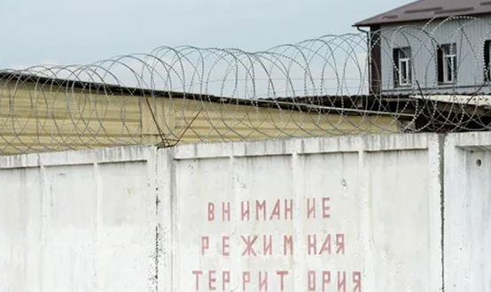

Освобождение от уголовной ответственности в связи с возмещением ущерба
Возмещение ущерба подразумевает денежную компенсацию, вносимую лицом в счет причиненного материального ущерба, если его действия не повлекли какого-либо другого ущерба.
УК РФ предусматривает два варианта применения данного вида освобождения от уголовной ответственности:
а) совершение впервые преступлений, предусмотренных статьями 198 - 199.1, 199.3, 199.4 УК РФ (уклонение от уплаты налогов, сборов, страховых взносов) – для освобождения от уголовной ответственности необходимо возместить материальный ущерб в полном объеме;
б) совершение некоторых преступлений против собственности (нарушение авторских и смежных прав – ст. 146 УК РФ, незаконное получение кредита – ст. 176 УК РФ и др.) – необходимо возместить материальный ущерб и перечислить в федеральный бюджет сумму в размере двукратной суммы причиненного ущерба.
Освобождение от уголовной ответственности с назначением судебного штрафа
Лицо, впервые совершившее преступление небольшой или средней тяжести, может быть освобождено судом от уголовной ответственности с назначением судебного штрафа в случае, если оно возместило ущерб или иным образом загладило причиненный преступлением вред.
Освобождение от уголовной ответственности в связи с истечением сроков давности
Сроки давности – это сроки, регулирующие своевременность привлечения лица к уголовной ответственности.
Наказание за преступление должно быть не только справедливым, но и своевременным, поэтому закон установил периоды времени, по истечении которых привлечение лица к ответственности невозможно. Данные сроки также призваны стимулировать органы следствия и дознания работать оперативно и не затягивать производство.
Лицо освобождается от уголовной ответственности, если со дня совершения преступления истекли следующие сроки:
а) два года после совершения преступления небольшой тяжести;
б) шесть лет после совершения преступления средней тяжести;
в) десять лет после совершения тяжкого преступления;
г) пятнадцать лет после совершения особо тяжкого преступления.
Вопрос о применении сроков давности к лицу, совершившему преступление, наказуемое смертной казнью или пожизненным лишением свободы, решается судом: если суд не сочтет возможным освободить указанное лицо от уголовной ответственности в связи с истечением сроков давности, то смертная казнь и пожизненное лишение свободы не применяются.
Наиболее тяжкие преступление против общественной и государственной безопасности (терроризм, геноцид и др.) не имеют сроков давности, т.е. привлечение к уголовной ответственности лиц, их совершивших, допустимо даже по истечении пятнадцати лет.
Сроки давности исчисляются со дня совершения преступления и до момента вступления приговора суда в законную силу. В случае совершения лицом нового преступления сроки давности по каждому преступлению исчисляются самостоятельно.
Течение сроков давности приостанавливается, если лицо, совершившее преступление, уклоняется от следствия или суда либо от уплаты судебного штрафа. В этом случае течение сроков давности возобновляется с момента задержания указанного лица или явки его с повинной.